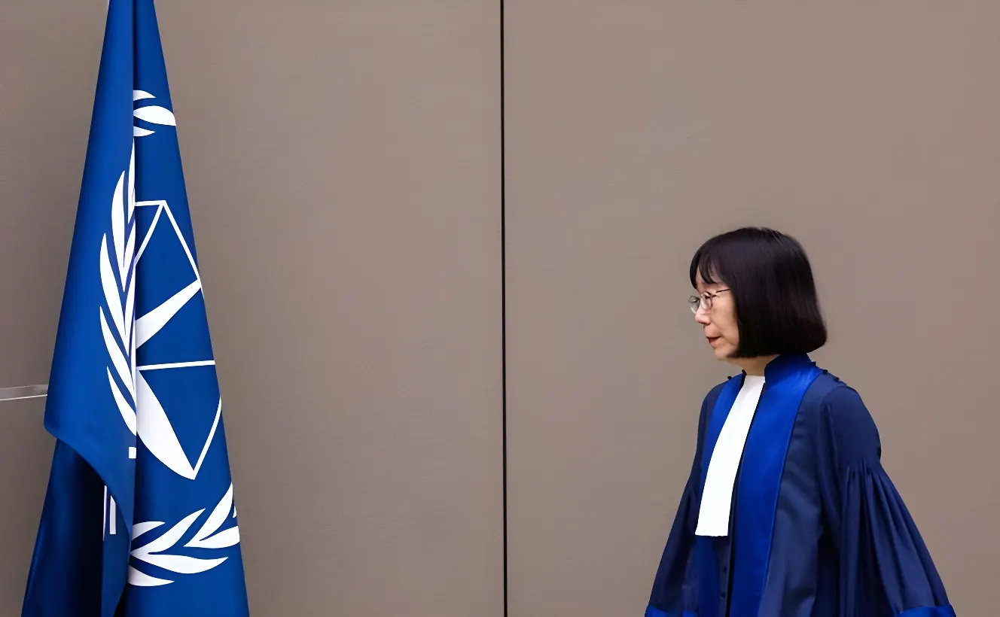

Le 18 août 2026, le département d'État américain a annoncé de nouvelles sanctions contre deux responsables de la Cour pénale internationale (CPI) : sa présidente, la juge japonaise Tomoko Akane, et Abdoulaye Seye, avocat principal au Bureau du Procureur. Prises en application d'un décret signé par Donald Trump en février 2025, ces mesures portent à treize le nombre de responsables de la Cour visés par Washington en dix-huit mois, en représailles aux enquêtes de la CPI sur les crimes de guerre présumés commis par Israël à Gaza et, plus anciennement, par des militaires américains en Afghanistan.
Ni les États-Unis ni Israël ne sont parties au Statut de Rome, le traité fondateur de la CPI entré en vigueur en 2002. Mais la Cour tire de ce texte une compétence territoriale qui s'étend au territoire de ses États membres — dont la Palestine, reconnue comme État partie depuis 2015, ce qui inclut Gaza. C'est sur cette base que la CPI a délivré, en novembre 2024, des mandats d'arrêt contre le Premier ministre israélien Benyamin Netanyahou et son ex-ministre de la Défense Yoav Gallant, pour des crimes de guerre et crimes contre l'humanité présumés commis à Gaza — une décision qui avait immédiatement suscité la colère de Washington et de ses alliés. Trois semaines après son retour à la Maison-Blanche, le 6 février 2025, Donald Trump a signé le décret EO 14203, déclarant que les actions de la CPI contre les États-Unis et Israël constituaient une menace « inhabituelle et extraordinaire » pour la sécurité nationale américaine. Le procureur en exercice de la Cour, le Britannique Karim Khan, a été le premier visé, sanctionné dès le 13 février 2025.
Le décret ne s'est pas arrêté à Karim Khan. Au cours de la seule année 2025, le secrétaire d'État Marco Rubio l'a mobilisé pour sanctionner quatre juges supplémentaires en juin, puis deux autres juges ainsi que les deux procureures adjointes de la Cour en août, avant d'y ajouter deux derniers juges en décembre. Le même texte a également servi de base, en septembre 2025, pour sanctionner la rapporteuse spéciale de l'ONU sur les territoires palestiniens occupés, Francesca Albanese, ainsi que trois organisations palestiniennes de défense des droits humains, Al-Haq, Al Mezan et le Palestinian Centre for Human Rights.
Si l'affaire Gaza domine l'actualité récente, la colère américaine contre la CPI est plus ancienne et vise aussi une autre enquête, ouverte dès 2017 : celle sur les crimes de guerre présumés commis en Afghanistan. Autorisée par les juges de la Cour en mars 2020, cette enquête porte sur des actes attribués aux talibans, aux forces afghanes, mais aussi à des militaires américains et à des agents de la CIA, soupçonnés d'actes de torture et de traitements cruels sur des détenus. Cette procédure avait déjà valu, à l'époque, des sanctions américaines contre l'ex-procureure Fatou Bensouda. Karim Khan avait annoncé en 2021 vouloir concentrer l'enquête sur les talibans et le groupe État islamique plutôt que sur les forces américaines, sans toutefois clore formellement ce volet du dossier. Khan lui-même a par ailleurs été démis de ses fonctions de procureur en juillet 2026, à l'issue d'une procédure disciplinaire liée à des accusations de faute, laissant ses deux adjointes — elles aussi sous sanctions américaines — à la tête du Bureau du Procureur.
C'est Marco Rubio en personne qui a annoncé, sur les réseaux sociaux, l'ajout de la présidente Tomoko Akane et de l'avocat principal Abdoulaye Seye à la liste des personnes sanctionnées, présentant cette décision comme une étape supplémentaire dans la « mission » de l'administration visant à protéger les ressortissants américains. Les sanctions, qui gèlent tout avoir détenu aux États-Unis par les deux responsables et leur ferment l'accès au système financier américain, entreront formellement en vigueur le 17 septembre 2026, le Trésor américain ayant accordé une licence générale de liquidation des opérations en cours jusqu'à cette date. Le Premier ministre israélien Benyamin Netanyahou a salué la décision sur X, qualifiant la CPI de « tribunal fantoche » qui détournerait le langage du droit international.
Juge japonaise, Tomoko Akane préside la CPI depuis son élection par ses pairs en mars 2024. Abdoulaye Seye, juriste sénégalais, est avocat principal au Bureau du Procureur, l'organe chargé des enquêtes et poursuites devant la Cour. Selon les organisations de défense des droits humains, ces nouvelles désignations portent à treize le nombre total de responsables de la CPI visés par le décret américain depuis février 2025 : neuf des dix-huit juges de la Cour, les deux procureures adjointes, l'ex-procureur Karim Khan et un membre du personnel du Bureau du Procureur.
La Cour a dénoncé le lendemain une « attaque flagrante » contre son indépendance judiciaire, estimant que ces sanctions mettent en péril l'ordre juridique international en cherchant à dissuader ses agents d'appliquer le droit. Au Japon, la Première ministre Sanae Takaichi a jugé la situation « très regrettable » et annoncé vouloir maintenir le dialogue avec Washington, tandis que le ministère japonais des Affaires étrangères a réaffirmé son soutien constant à la Cour. Les Pays-Bas, pays hôte de la CPI, l'Allemagne et la France ont tour à tour exprimé leur soutien à l'institution, et le secrétaire général de l'ONU António Guterres s'est dit sérieusement préoccupé. Sur le plan judiciaire, la riposte s'organise aussi aux États-Unis mêmes : le 11 août 2026, soit une semaine avant l'annonce visant Akane et Seye, Human Rights Watch et plusieurs organisations de défense des droits humains avaient déjà saisi la justice fédérale américaine pour contester la légalité des sanctions déjà en vigueur contre les responsables de la CPI, un rapporteur spécial de l'ONU et des ONG palestiniennes — une procédure qui fait suite à un recours déposé dès juin 2025 par trois juges de la Cour eux-mêmes.
La CPI délivre des mandats d'arrêt contre Benyamin Netanyahou et Yoav Gallant pour des crimes présumés à Gaza.
Donald Trump signe le décret EO 14203, imposant des sanctions à la CPI et déclarant l'état d'urgence nationale.
Le procureur Karim Khan devient la première personne sanctionnée en application du décret.
Quatre juges supplémentaires de la CPI sont ajoutés à la liste des sanctions.
Deux juges de plus, ainsi que les deux procureures adjointes, sont sanctionnés.
La rapporteuse spéciale de l'ONU Francesca Albanese et trois ONG palestiniennes sont sanctionnées sur la base du même décret.
Deux juges supplémentaires sont ajoutés à la liste, portant le total à onze responsables sanctionnés.
Karim Khan est démis de ses fonctions de procureur à l'issue d'une procédure disciplinaire pour faute.
Human Rights Watch et plusieurs organisations saisissent la justice fédérale américaine pour contester les sanctions.
La présidente Tomoko Akane et l'avocat Abdoulaye Seye sont sanctionnés à leur tour, effectif au 17 septembre.
Les sanctions américaines n'ont pas de portée directe sur les procédures judiciaires en cours à La Haye : elles visent les personnes, pas l'institution elle-même, qui n'a pas de compte bancaire aux États-Unis. Mais en coupant treize de ses responsables du système financier américain, avec lequel la quasi-totalité des banques opérant à l'international entretiennent des liens étroits, Washington complique concrètement leurs déplacements et leur vie quotidienne. Devant les représentants des 125 États membres de la Cour, Tomoko Akane a affirmé ne céder à « aucune pression », qu'elle vienne des États-Unis ou d'ailleurs. Plusieurs recours sont désormais pendants devant les tribunaux fédéraux américains, qui devront se prononcer sur la légalité du décret lui-même, tandis qu'un projet de loi visant à durcir encore la réponse du Congrès contre la Cour reste en suspens à Washington. Entre soutiens diplomatiques sans sanctions en retour de la part des alliés européens et du Japon, et procédures judiciaires croisées des deux côtés de l'Atlantique, le bras de fer entre Washington et La Haye sur les limites de la justice pénale internationale ne semble pas près de s'achever.
On August 18, 2026, the U.S. State Department announced new sanctions against two officials of the International Criminal Court (ICC): its president, Japanese judge Tomoko Akane, and Abdoulaye Seye, a senior trial lawyer in the Office of the Prosecutor. Imposed under an executive order signed by Donald Trump in February 2025, the measures bring to thirteen the number of Court officials targeted by Washington in eighteen months, in retaliation for ICC investigations into alleged war crimes committed by Israel in Gaza and, earlier, by U.S. military personnel in Afghanistan.
Neither the United States nor Israel is a party to the Rome Statute, the ICC's founding treaty, which entered into force in 2002. But the Court derives from it a territorial jurisdiction extending to the territory of its member states — including Palestine, recognized as a state party since 2015, which covers Gaza. On that basis, in November 2024, the ICC issued arrest warrants against Israeli Prime Minister Benjamin Netanyahu and former Defense Minister Yoav Gallant, for alleged war crimes and crimes against humanity in Gaza — a decision that immediately drew anger from Washington and its allies. Three weeks after returning to the White House, on February 6, 2025, Donald Trump signed Executive Order 14203, declaring that the ICC's actions against the United States and Israel constituted an "unusual and extraordinary" threat to U.S. national security. The Court's sitting prosecutor, British lawyer Karim Khan, was the first to be sanctioned, designated on February 13, 2025.
The order did not stop with Karim Khan. Over the course of 2025 alone, Secretary of State Marco Rubio used it to sanction four more judges in June, then two additional judges along with both deputy prosecutors in August, before adding two final judges in December. The same order was also used, in September 2025, to sanction UN Special Rapporteur on the occupied Palestinian territories Francesca Albanese, along with three Palestinian human rights organizations, Al-Haq, Al Mezan and the Palestinian Centre for Human Rights.
While the Gaza case dominates recent headlines, American anger at the ICC is older and also targets another investigation, opened as far back as 2017: the probe into alleged war crimes committed in Afghanistan. Authorized by the Court's judges in March 2020, this investigation covers acts attributed to the Taliban and Afghan forces, but also to U.S. military personnel and CIA operatives, suspected of torture and cruel treatment of detainees. That case had already prompted U.S. sanctions against then-Prosecutor Fatou Bensouda. Karim Khan announced in 2021 that he intended to focus the investigation on the Taliban and the Islamic State rather than U.S. forces, without formally closing that part of the case. Khan himself was removed as prosecutor in July 2026, following a disciplinary process over misconduct allegations, leaving his two deputies — themselves under U.S. sanctions — running the Office of the Prosecutor.
Marco Rubio himself announced on social media the addition of President Tomoko Akane and senior trial lawyer Abdoulaye Seye to the sanctions list, presenting the move as a further step in the administration's stated mission to protect American citizens. The sanctions, which freeze any assets the two officials hold in the United States and cut them off from the U.S. financial system, formally take effect on September 17, 2026, with the Treasury Department issuing a general license to wind down existing transactions until that date. Israeli Prime Minister Benjamin Netanyahu welcomed the decision on X, calling the ICC a "kangaroo court" that cloaks itself in the language of international law.
A Japanese judge, Tomoko Akane has served as ICC president since her election by fellow judges in March 2024. Abdoulaye Seye, a Senegalese lawyer, is a senior trial lawyer in the Office of the Prosecutor, the Court's investigative and prosecutorial arm. According to human rights groups, these latest designations bring to thirteen the total number of ICC officials targeted under the U.S. order since February 2025: nine of the Court's eighteen judges, both deputy prosecutors, former prosecutor Karim Khan, and one member of the Office of the Prosecutor's staff.
The following day, the Court condemned the move as a "flagrant attack" on its judicial independence, warning that the sanctions put the international legal order at risk by seeking to deter its officials from applying the law. In Japan, Prime Minister Sanae Takaichi called the situation "very unfortunate" and said she intended to keep communication open with Washington, while Japan's foreign ministry reaffirmed its consistent support for the Court. The Netherlands, the ICC's host country, along with Germany and France, each voiced support for the institution, and UN Secretary-General António Guterres said he was seriously concerned. Legal pushback is also under way inside the United States itself: on August 11, 2026, a week before the designations against Akane and Seye, Human Rights Watch and several other organizations had already filed suit in U.S. federal court challenging the legality of sanctions already in place against ICC officials, a UN special rapporteur, and Palestinian NGOs — a case that follows a lawsuit filed as early as June 2025 by three ICC judges themselves.
The ICC issues arrest warrants against Benjamin Netanyahu and Yoav Gallant over alleged crimes in Gaza.
Donald Trump signs Executive Order 14203, sanctioning the ICC and declaring a national emergency.
Prosecutor Karim Khan becomes the first person sanctioned under the order.
Four additional ICC judges are added to the sanctions list.
Two more judges, along with both deputy prosecutors, are sanctioned.
UN Special Rapporteur Francesca Albanese and three Palestinian NGOs are sanctioned under the same order.
Two more judges are added, bringing the total to eleven officials sanctioned.
Karim Khan is removed as prosecutor following a disciplinary process over misconduct allegations.
Human Rights Watch and several organizations sue the U.S. government in federal court over the sanctions.
President Tomoko Akane and lawyer Abdoulaye Seye are sanctioned in turn, effective September 17.
The U.S. sanctions have no direct bearing on the judicial proceedings under way in The Hague: they target individuals, not the institution itself, which holds no bank accounts in the United States. But by cutting off thirteen of its officials from the U.S. financial system, to which nearly all internationally operating banks maintain close ties, Washington is making their travel and daily lives considerably harder in practice. Addressing representatives of the Court's 125 member states, Tomoko Akane said she would accept "no kind of pressure," whether from the United States or elsewhere. Several lawsuits are now pending before U.S. federal courts, which will have to rule on the legality of the order itself, while a bill to further toughen Congress's response to the Court remains stalled in Washington. Between diplomatic support without countersanctions from European allies and Japan, and cross-Atlantic legal battles on both sides, the standoff between Washington and The Hague over the limits of international criminal justice shows no sign of ending soon.